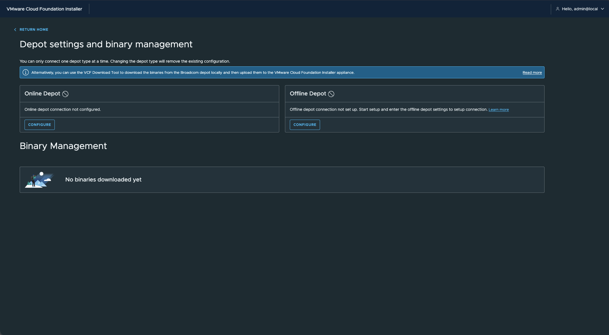
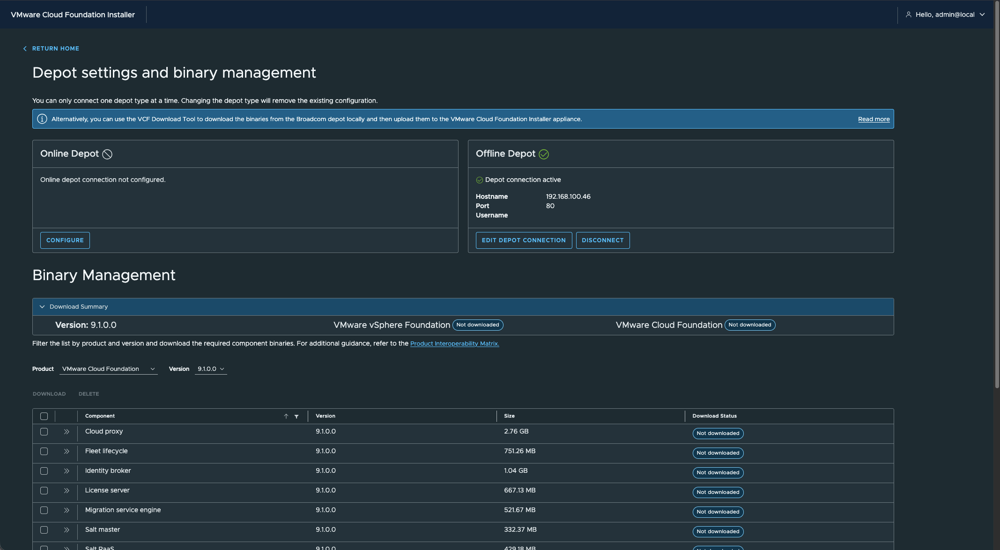
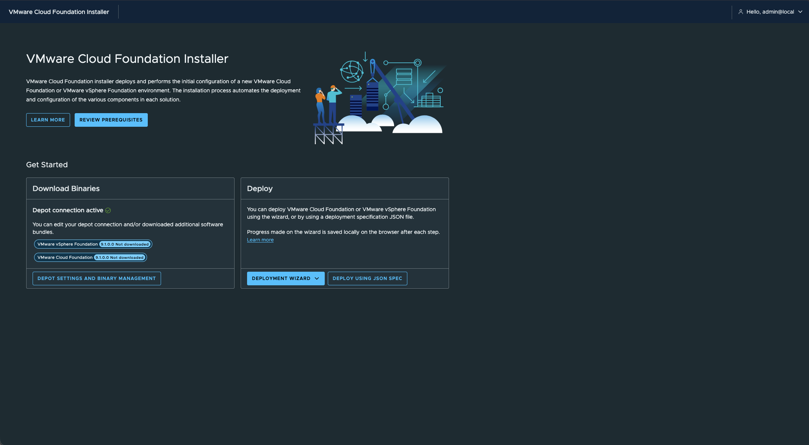
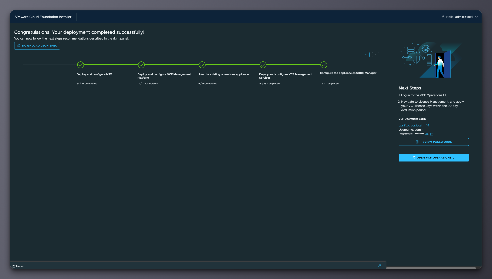
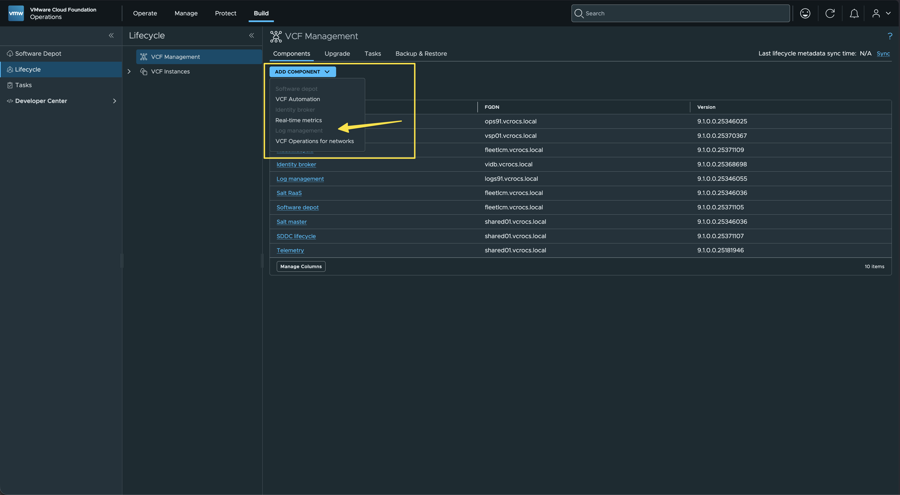
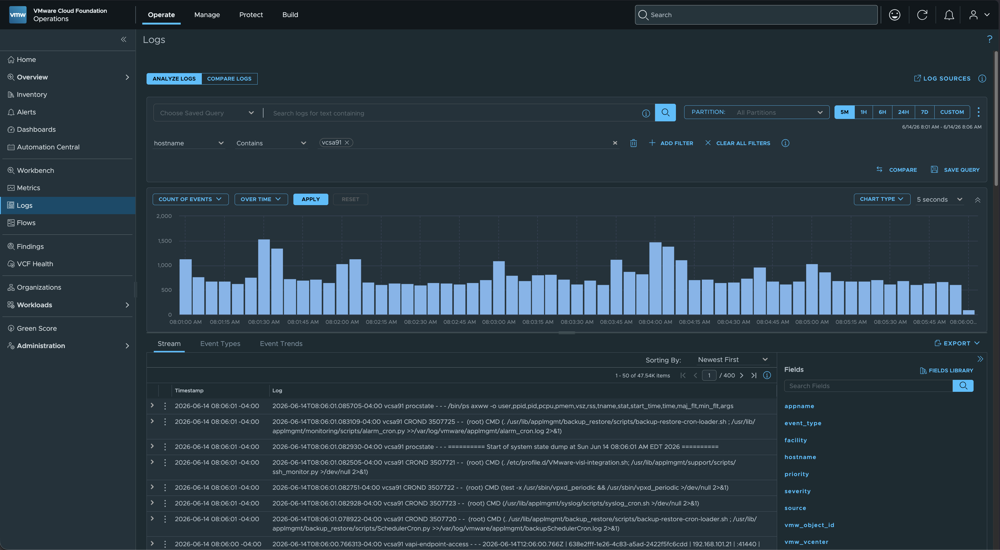
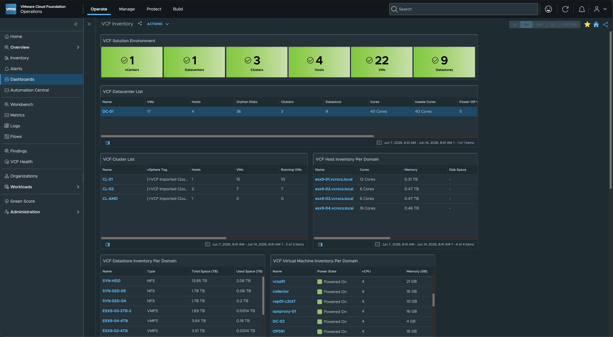
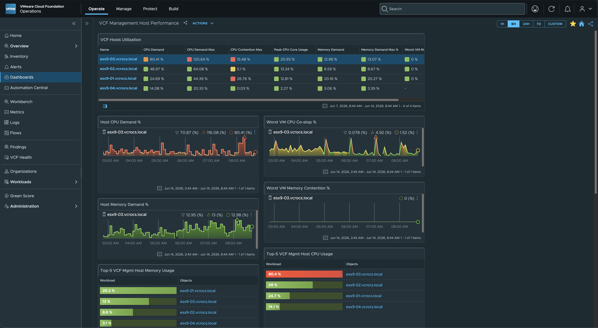
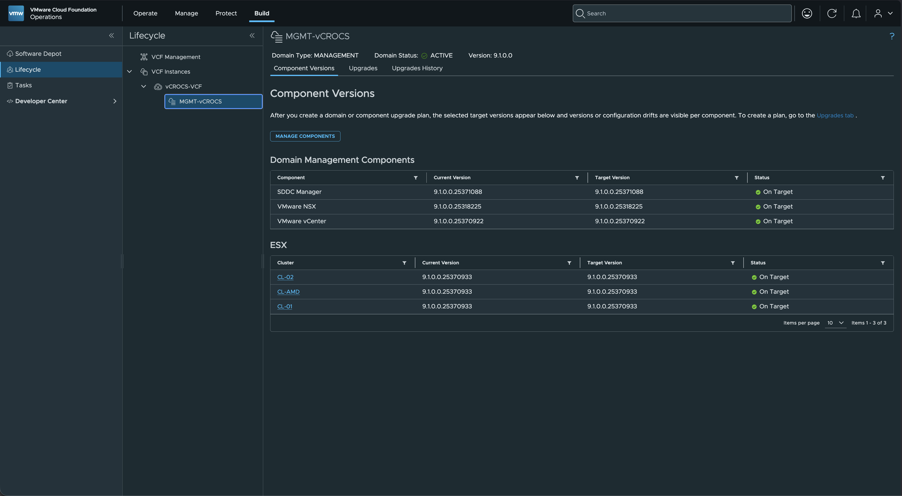
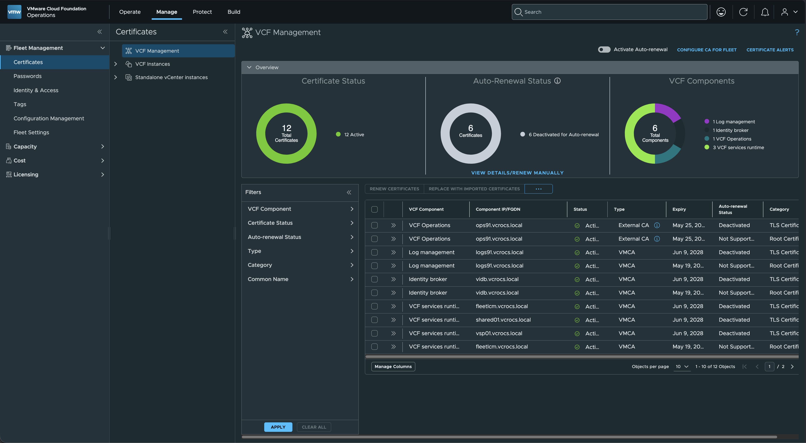

VCF 9.1 | Minimum Lab updated (Level 2)

The Minimum VCF 9.1 Lab (Level 1) updated with additional platform features (Level 2).
My previous post detailed the minimum requirements for a VMware Cloud Foundation (VCF) 9.1 evaluation environment: VCF 9.1 - Minimum Lab Build.
The initial minimum build served as a functional starting point. After testing the available features for a few days, the next step was adding Fleet Management features. Deploying the minimum installation first allows the existing ESXi, vCenter, and VCF Operations infrastructure to carry forward, simplifying the expansion.
Next Steps: Deployment Order and Component Installation
Deploy the components in the following order to complete the setup:
1. Offline Software Depot
2. VCF Installer
3. VCF 9.1 Operations Logs
Offline Software Depot
The offline software depot functions as a web server. For this environment I used Rocky Linux with the Apache Web Server, but any Linux distribution and web server combination works.
To populate the repository with VCF installation files, use the VMware Cloud Foundation Download Tool (VCFDT). For detailed configuration steps and optimization tips, reference the guides published on William Lam's blog.
Example interface when the Offline Depot is configured:
VCF Installer
The VCF installer was deployed using the vCenter server from the initial minimum installation, leveraging the existing infrastructure. After the VCF 9.1 installer was running, a couple of configuration changes were required to adapt it for a compact home lab environment.
VCF 9.1 Installer before running the script:

VCF 9.1 Installer after ruuning the script:

Here are the changes I made to the VCF 9.1 installer.
- I used this Script that was published on William Lam - VCF 9.1 - New HTTP Offline Depot Support for VCF Installer & Fleet Depot Service
# ------------------------- Update to your installer FQDN
$VCFInstallerFQDN = "vcf91sddc.vcrocs.local"
$VCFInstallerRootPassword = "VMware1!VMware1!"
# -------------------------- Your HTTP depot URL
$VCFInstallerOfflineDepot = "http://192.168.100.46"
# Authenticate
$payload = @{
username = "admin@local"
password = $VCFInstallerRootPassword
} | ConvertTo-Json
$params = @{
Uri = "https://${VCFInstallerFQDN}/v1/tokens"
Method = 'POST'
Headers = @{ 'Content-Type' = 'application/json' }
SkipCertificateCheck = $true
Body = $payload
}
$requests = Invoke-WebRequest @params
if ($requests.StatusCode -eq 200) {
$accessToken = ($requests.Content | ConvertFrom-Json).accessToken
}
# Set HTTP Offline Depot
$depotBody = @{
depotConfiguration = @{
isOfflineDepot = $true
url = $VCFInstallerOfflineDepot
}
} | ConvertTo-Json
$params = @{
Uri = "https://${VCFInstallerFQDN}/v1/system/settings/depot"
Method = 'PUT'
Headers = @{
Authorization = "Bearer ${accessToken}"
'Content-Type' = 'application/json'
}
SkipCertificateCheck = $true
Body = $depotBody
}
Invoke-WebRequest @params
VCF Installer Property Changes:
- Workarounds — feature.properties
- Edit /home/vcf/feature.properties on VCF Installer:
# Enable single or dual ESX host deployment
feature.vcf.vgl-29121.single.host.domain = true
# Disable vSAN ESA HCL check
feature.vcf.vgl-43370.vsan.esa.sddc.managed.disk.claim = true
# ----------------------------------
- Workarounds — application.properties
- Edit /etc/vmware/vcf/domainmanager/application.properties:
# Disable 10GbE pNIC speed check
enable.speed.of.physical.nics.validation = false
# Disable vSAN ESA HCL check
vsan.esa.sddc.managed.disk.claim = true
# Disable vMotion connectivity checks
validation.disable.vmotion.connectivity.check = true
validation.disable.vmotion.l3.gateway.connectivity.check = true
# Disable vSAN connectivity check
validation.disable.vsan.connectivity.check = true
# Disable NSX TEP MTU check
validation.disable.network.connectivity.check = true
nsxt.mtu.validation.skip = true
# Disable NFS connectivity check (single host + NFS principal storage)
validation.disable.nfs.configuration.connectivity.check = true
# Increase general deployment retries
orchestrator.task.retry.max = 5
# Increase NSX Manager deployment timeout
nsxt.manager.wait.minutes = 180
# Increase NSX Edge deployment timeout
edge.node.vm.creation.max.wait.minutes = 90
# Increase VCF Management Services deployment timeouts
vsp.bootstrap.task.timeout.minutes = 240
vsp.bootstrap.command.timeout.minutes = 200
# Increase Avi Load Balancer deployment timeout
nsxt.alb.image.upload.retry.check.interval.seconds = 90
# ----
# Reboot the VCF Installer
VCF 9.1 before starting the install:

VCF 9.1 install Completed:

3. VCF 9.1 Operations Logs:
After the VCF 9.1 installation completed, I verified everything was working OK and then added the VCF Operations Logs component using VCF Lifecycle -> Add Component.
VCF Lifecycle Add Component:

VCF 9.1 Logs:

After the VCF 9.1 Full install completed I gained these components of the VCF Platform.
VCF Dashboards:


VCF Lifecycle:

VCF Fleet Management:

Lessons Learned:
- Without the tips and tricks from William Lam's blog, setting up a VCF 9.1 Home Lab would be nearly impossible for the vCommunity.
- Modifying the VCF installer property changes is the key step that enables home lab deployments.
- William's shared knowledge allows professionals worldwide to build Home Lab environments, learn the VCF platform, and apply those skills to their daily work and the broader vCommunity.
- Starting with a Full VCF 9.1 deployment is not required. Beginning with a minimum installation allows you to evaluate the capabilities of a compact environment first. Adding additional components leverages the existing setup, reducing the workload for the VCF installer during the Full VCF 9.1 process.